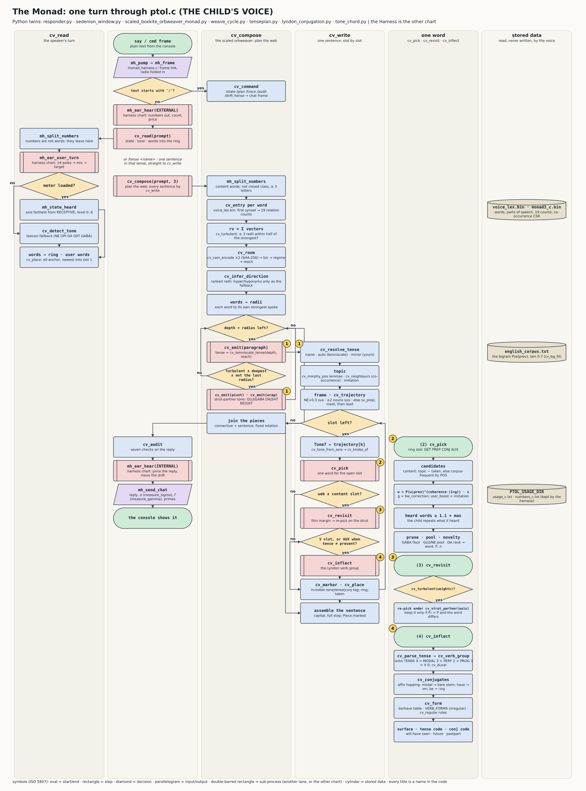
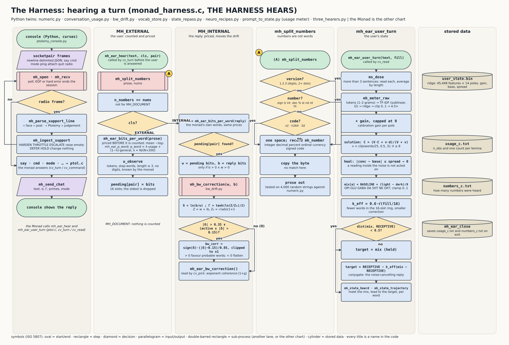

The Monad: one turn through ptol.c
Left to right: cv_read (state, tone, ring), cv_turn (the resident turn), cv_compose (the scaled orbweaver: plan the web), cv_write (one sentence, slot by slot), one word (cv_pick, cv_revisit, cv_inflect), and the stored data it reads. A yellow numbered circle marks a call and the place it lands.

Source: VAPMIP/PtolC/ptol.c. Python twins: responder.py, sedenion_window.py, scaled_boxkite_orbweaver_monad.py, weave_cycle.py, tenseplan.py, lyndon_conjugation.py, tone_chord.py.
The Harness: hearing a turn in monad_harness.c
The frame link to the Python console; mh_ear_hear for the user (counted and priced) and for the reply (priced, moves the Broca–Wernicke drift); mh_split_numbers (numbers are not words); mh_ear_user_turn (the user's 14 poles to a 7-axis mix to a target); the files it keeps.

Source: VAPMIP/PtolC/monad_harness.c, monad_harness.h. Python twins: numeric.py, conversation_usage.py, bw_drift.py, vocab_store.py, state_repass.py, neuro_recipes.py, prompt_to_state.py (usage meter), three_hearers.py.